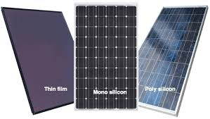
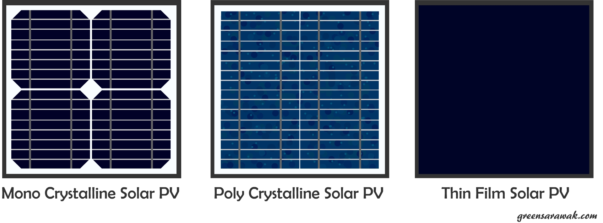
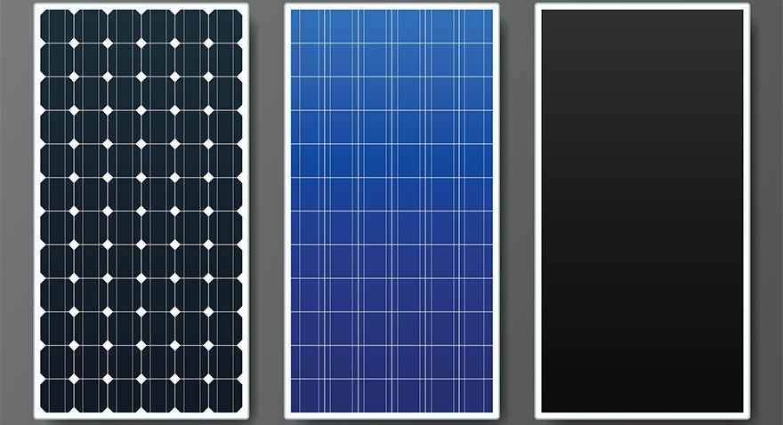

Jenis - Jenis Panel Surya
- Monocrystalline Silicon: Monocrystalline silicon merupakan panel surya yang memiliki banyak keunggulan, seperti terbuat silikon yang diiris tipis menggunakan bantuan mesin potong. Hasil irisan yang tipis tersebut membuat karakteristik monocrystalline silicon lebih menonjol. Selain itu, penampang monocrystalline silicon bisa menyerap cahaya matahari lebih optimal jika dibandingkan dengan jenis sel surya yang lainnya.
- Polycrystalline Silicon: Polycrystalline silicon merupakan jenis panel surya yang umum digunakan di banyak jenis bangunan. Kebanyakan panel surya yang ditemukan di Indonesia menggunakan jenis yang satu ini. Teknologi panel surya tersebut terbuat dari batang silikon yang bisa dicairkan. Polycrystalline silicon juga memiliki kelebihan dari segi susunan yang lebih rapat dan rapi. Karakteristik polycrystalline silicon adalah mempunyai tampilan yang cukup unik.
- Thin Film Solar Cell: thin film solar cell jarang dipakai untuk bangunan di skala rumahan dan hanya digunakan untuk kebutuhan komersial saja. Ya, sesuai dengan namanya jenis panel surya yang satu ini memiliki ukuran yang sangat tipis dan memiliki bobot yang lebih ringan. Selain itu, sifatnya juga sangat fleksibel.
- Compound Thin Film Triple Junction Photovoltaic: Sesuai dengan namanya, jenis panel surya yang satu ini hanya memiliki tiga lapisan. compound thin film triple junction photovoltaic ini bisa digunakan untuk kebutuhan sehari-hari. Hal itu dikarenakan jenis panel surya yang satu ini hanya bisa digunakan di luar angkasa.


